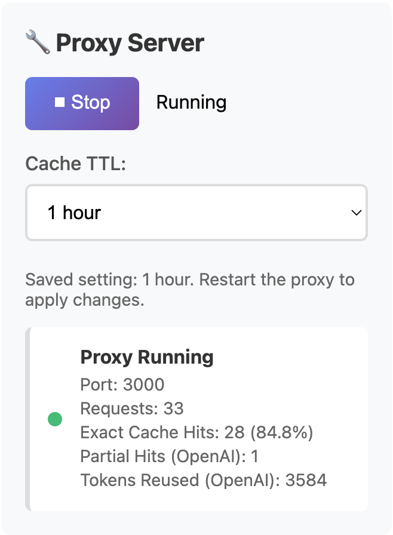

Local proxy path
Requests go through http://localhost:3000/v1, so AI Optimizer sits between your workflow and the upstream provider.
See how AI Optimizer handles repeated requests in practice. The point is simple: show real cache behavior clearly enough that you can judge whether it fits your workflow.
AI Optimizer can cache repeated OpenAI, Anthropic, and supported Gemini requests through a local proxy workflow. In repeat tests, identical requests increased cacheHits instead of sending the same work upstream at full cost again. That matters most for repeat-heavy scripts, automations, cron jobs, and agent workflows.
The proof case is intentionally simple: same request shape, same provider, same local proxy path, and repeated calls checked against request totals and cache-hit counts.
Requests go through http://localhost:3000/v1, so AI Optimizer sits between your workflow and the upstream provider.
Identical or near-identical requests are repeated to see whether cacheHits increases instead of paying full price for the same work again.
OpenAI is a natural fit for this style of proof because many scripts, tools, and repeat-heavy automations send the same request pattern over and over. The strongest proof is simple: keep the request path stable and watch repeated calls turn into visible cache behavior.
Anthropic support matters because it proves the local proxy model is not only for one provider. The strongest Anthropic example is a repeated Claude request that still benefits from the cache inside the TTL window.
A cache hit means the repeated request was resolved locally instead of paying for the same upstream work again. That matters most when workflows repeat on a schedule or through common tool loops.
Cache behavior only stays useful if repeated requests happen within the configured TTL window. That is why recurring jobs, cron prompts, and repeated scripts are such a clean fit for this workflow.
The value of a proof page is precision. It should show where AI Optimizer is strong without pretending every workflow will behave the same way.
Local proxy caching works. OpenAI, Anthropic, and supported Gemini workflows can all benefit when the request pattern is stable enough to hit cache. If your workflow repeats clearly enough, AI Optimizer can reduce repeated API waste.
It does not mean every prompt will hit cache. Highly dynamic request bodies, changing timestamps, or constantly unique prompts will reduce hit rate. AI Optimizer works best where repetition is real.

Install AI Optimizer, route traffic through localhost, confirm cache-hit behavior, and then apply the same pattern to repeat-heavy tools, scripts, cron jobs, and automations.